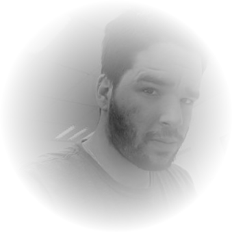

<ion-content class="with-me">
  <section class="what-you-see">
    <ion-grid>
      <ion-row>
        <ion-col size-lg="4">
          <div class="perfil">
            <div class="photo">
              
            </div>
            <div class="aboutme font-personalizada">
              <p>Felipe Baptistella Vieira <span>(<span class="light-green">Phelps</span>).</span></p>
              <p class="front-title">FRONT-END DEVELOPER</p>
              <hr class="ion-hide-lg-down">
              <div class="buttons">
                <ion-button class="gray" fill="outline" shape="round" size="large" download href="../../../assets/documents/fbv-cv.docx">Baixar Currículo <ion-icon class="mg-left-5" name="document-text-outline"></ion-icon></ion-button>
              </div>
            </div>
          </div>
        </ion-col>
  
        <ion-col size-lg="8" class="ion-hide-lg-down">
          <ion-slides pager="true" [options]="slidePhelps" #slider>
            <ion-slide>
              <div class="slide-content">
                <ion-item mode="ios" lines="none">
                  <ion-icon slot="end" name="information-outline"></ion-icon>
                  <ion-label slot="start">O que faz um front-end?</ion-label>
                </ion-item>
                <div class="slide-text">
                  <hr>

                  <p>O profissional <i>front-end</i> é responsável pelo desenvolvimento de <b>interfaces</b>, seja na web ou aplicativo.
                  Um projeto possui diversas camadas e nós somos responsáveis pela camada visual, digamos assim. Cuidamos da estrutura, 
                  da estética e também das animações que ocorrem na tela.</p>

                  <p>É isso que eu faço, dou vida as telas. Sou completamente <b>apaixonado</b> pelo que faço e me mantenho em constante evolução para fazer o melhor que posso. </p>

                  <ion-button class="green-light" mode="md" fill="clear" button-type="button" (click)="nextSlide()">Formação<ion-icon class="mg-left-5" name="arrow-forward-outline"></ion-icon></ion-button>
                  
                </div>
              </div>
            </ion-slide>
            <ion-slide>
              <div class="slide-content">
                <ion-item mode="ios" lines="none">
                  <ion-icon slot="end" name="school-outline"></ion-icon>
                  <ion-label slot="start">Formação acadêmica</ion-label>
                </ion-item>
                <div class="slide-text without-mg">
                  <hr>

                  <p>Formado em <b>Análise e Desenvolvimento de Sistemas</b>.</p>
                  <p>Concluído em <b>2018</b>.</p>
                  
                  

                  <ion-button class="green-light" mode="md" fill="clear" button-type="button" (click)="nextSlide()">Experiência<ion-icon class="mg-left-5" name="arrow-forward-outline"></ion-icon></ion-button>
                </div>
              </div>
            </ion-slide>
            <ion-slide>
              <div class="slide-content">
                <ion-item mode="ios" lines="none">
                  <ion-icon slot="end" name="information-outline"></ion-icon>
                  <ion-label slot="start">Experiência profissional</ion-label>
                </ion-item>
                <div class="slide-text">
                  <hr>

                  <p>Atualmente faço parte da equipe de desenvolvedores da <a href="https://www.mjvinnovation.com/pt-br/" target="_blank">MJV - Technology & Inovation</a>, uma das principais consultorias em <b>inovação</b> e <b>tecnologia</b> do país.</p>
                  
                  
                </div>
              </div>
            </ion-slide>
          </ion-slides>
        </ion-col>
      </ion-row>
    </ion-grid>
  </section>
</ion-content>